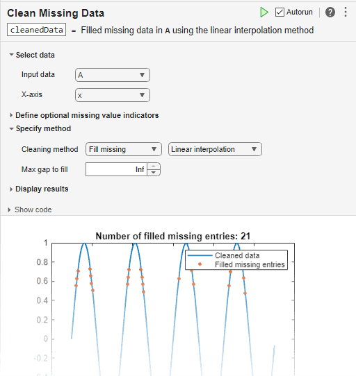

standardizeMissing
Insert standard missing values
Description
B = standardizeMissing(A,indicator)indicator with standard missing values in
A and returns a standardized array or table.
Missing values are defined according to the data type of
A:
NaN—double,single,duration, andcalendarDurationNaT—datetime<missing>—string<undefined>—categorical{''}—cellof character vectors
If A is a table, then the data type of each variable defines the
missing value for that variable.
In addition to standardizing missing values, you can interactively find, fill, or remove missing data by adding the Clean Missing Data task to a live script.
B = standardizeMissing(___,Name,Value)standardizeMissing(A,indicator,'DataVariables',datavars) standardizes
missing values in the variables specified by datavars when
A is a table or timetable.
Examples
Input Arguments
Name-Value Arguments
Algorithms
standardizeMissing treats leading and trailing
white space differently for cell arrays of character vectors, character
arrays, and categorical arrays.
For cell arrays of character vectors,
standardizeMissingdoes not ignore white space. All character vectors must match exactly a character vector specified inindicator.For character arrays,
standardizeMissingignores trailing white space.For categorical arrays,
standardizeMissingignores leading and trailing white space.
Alternative Functionality
Live Editor Task
In addition to standardizing missing values, you can interactively find, fill, or remove missing data by adding the Clean Missing Data task to a live script.
